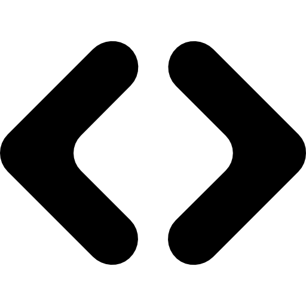
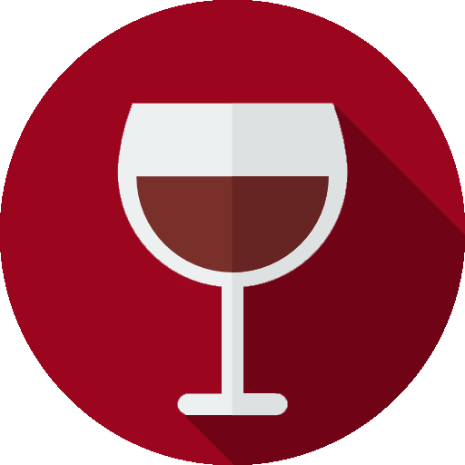

Bienvenido/a a la plataforma interactiva de visualización de información geográfica de Kalycatas. A continuación, se entregan los detalles sobre el uso de esta plataforma. Para acceder a las herramientas aquí mencionadas, basta con hacer click o seleccionarlas.
|
Herramienta |
Uso |
|
Vista general |
Restablece el nivel de zoom general. |
|  |
Activar/desactivar información geológica |
Despliega información geológica. Divide la pantalla en dos secciones y permite ajustar la visualización de información geológica en paralelo a la ubicación de los viñedos, desplazando la barra de control. Al pasar el cursor sobre la capa de información geológica desplegada, podrá identificar a que unidad geológica corresponde en la esquina superior derecha del visor. |
|
Búsqueda |
Permite la búsqueda de viñas según su nombre, acercando la visualización al resultado.
|
Leyenda
Al hacer click sobre cualquier viñedo, podrás ver el nombre, ubicación y su D.O. correspondiente. El nombre del viñedo también se mostrará en la esquina superior derecha del visor. Los viñedos con información adicional (azul), desplegarán una barra con datos de interés.
|
Símbolo |
Descripción |
|
Viñedo con información |
Indica que el viñedo posee información de interés adicional. Al hacer click sobre el ícono, se desplegará una barra lateral con información sobre clima, geomorfología, viticultura, etcétera. |
|  |
Viñedo sin información |
Indica que el viñedo, por el momento, no posee información adicional. |